Mineral treasures stashed in the footwell / Namibia Oil on board 2019
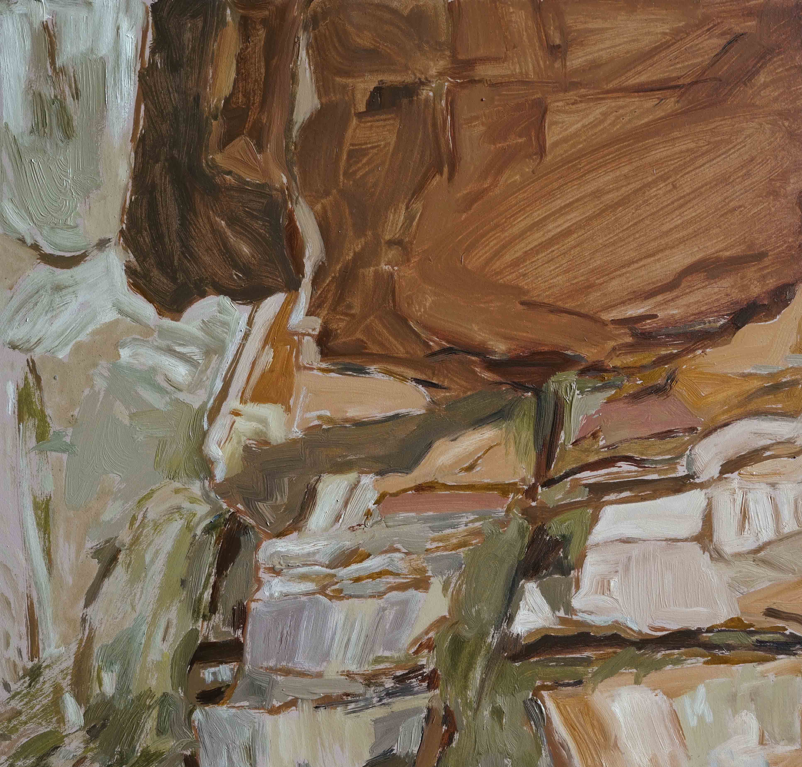
Whispering in caves / Table Mountain Oil on board 2019
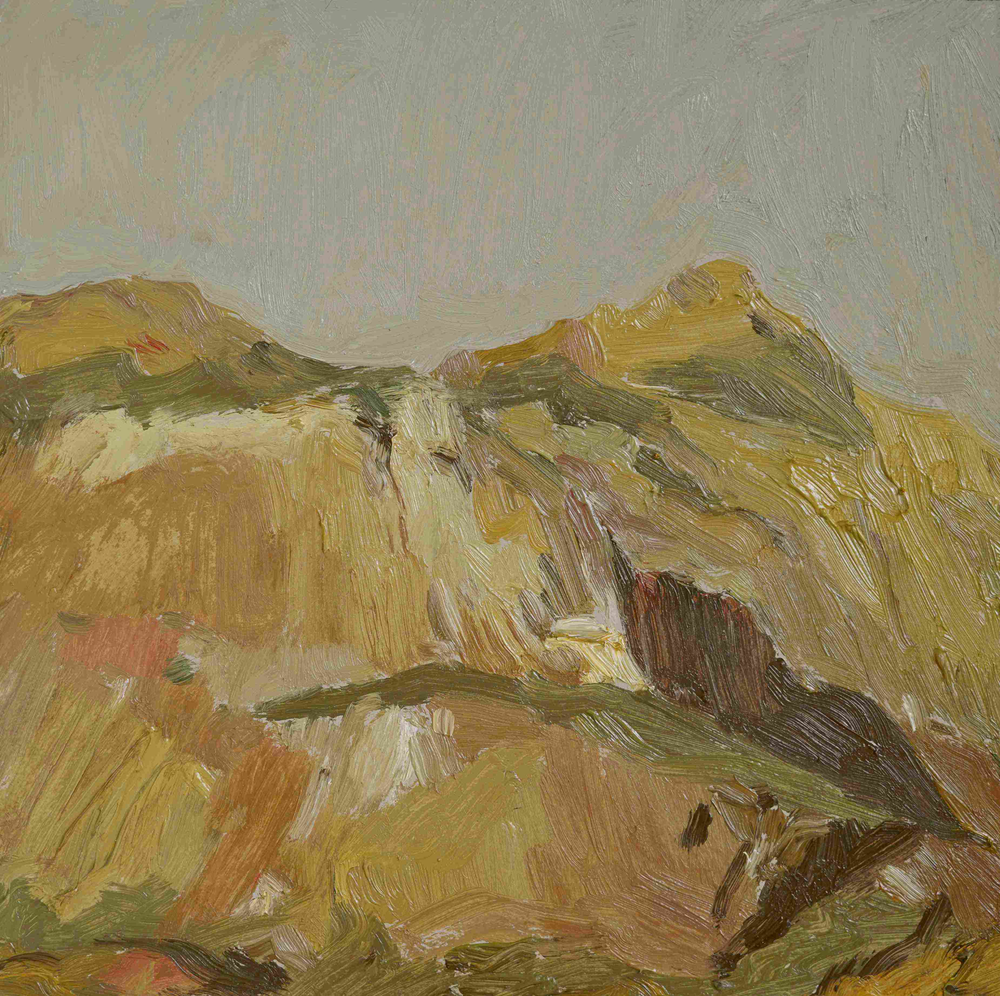
While our vegetables wilted in the chilly chest / Namibia Oil on board 2019
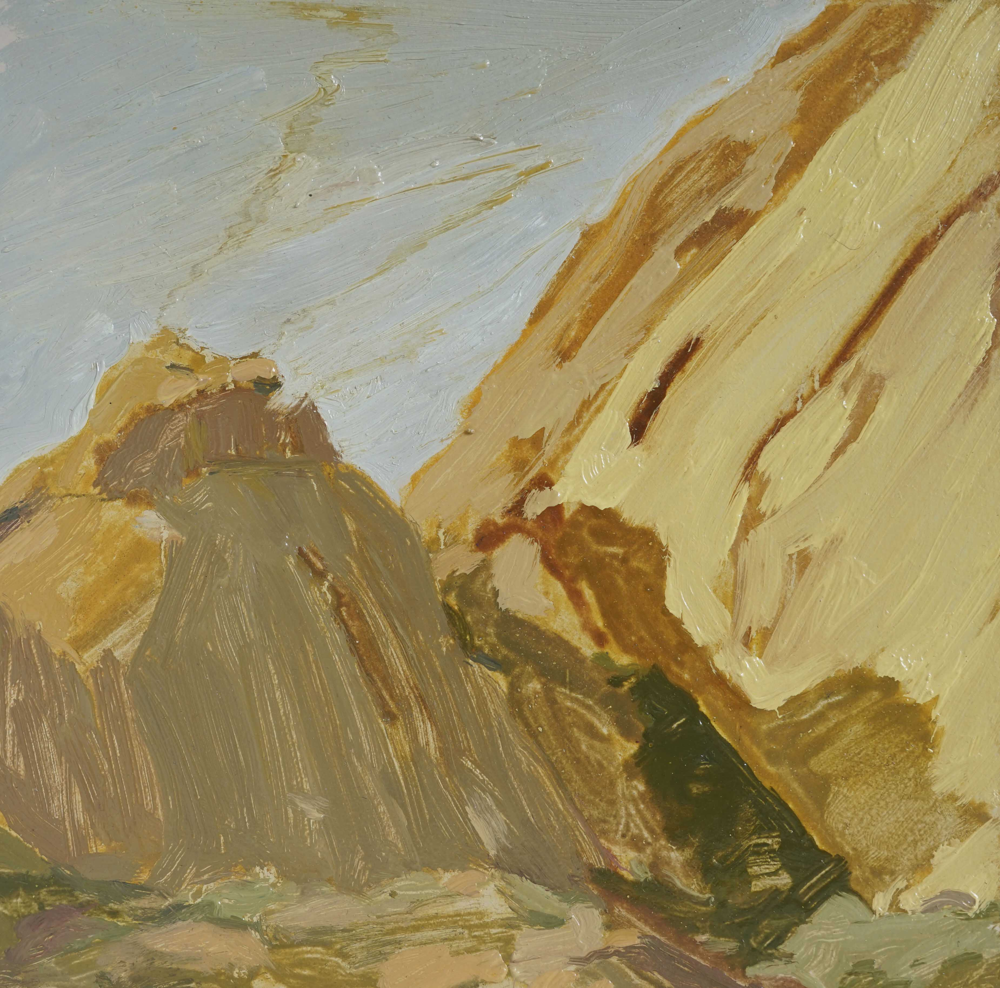
Dropping belay devices, Spitzkoppe Oil on board 2019
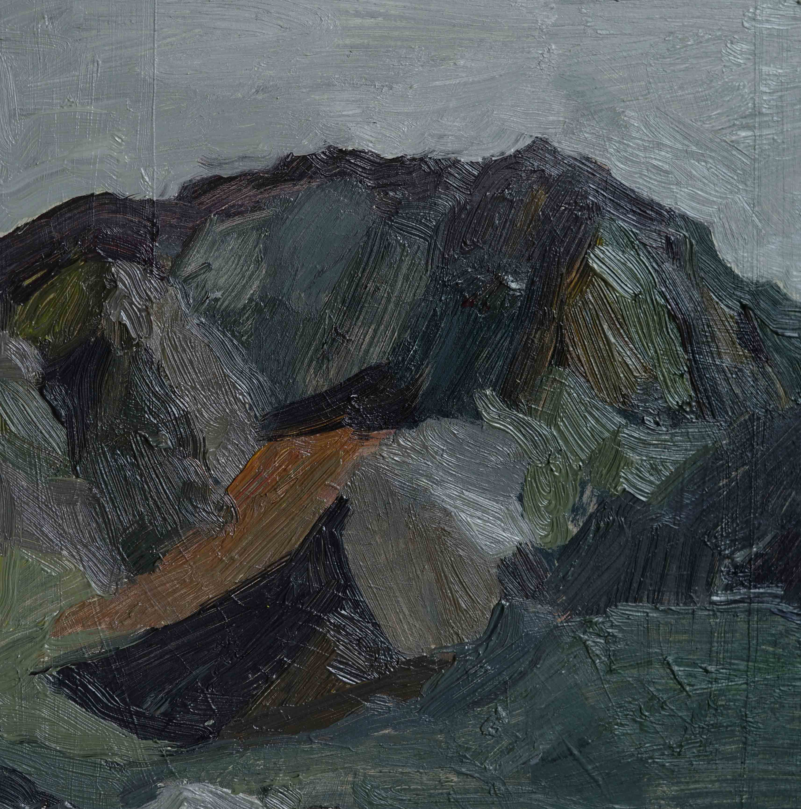
She called them The Mountains of Time Oil on board 2019
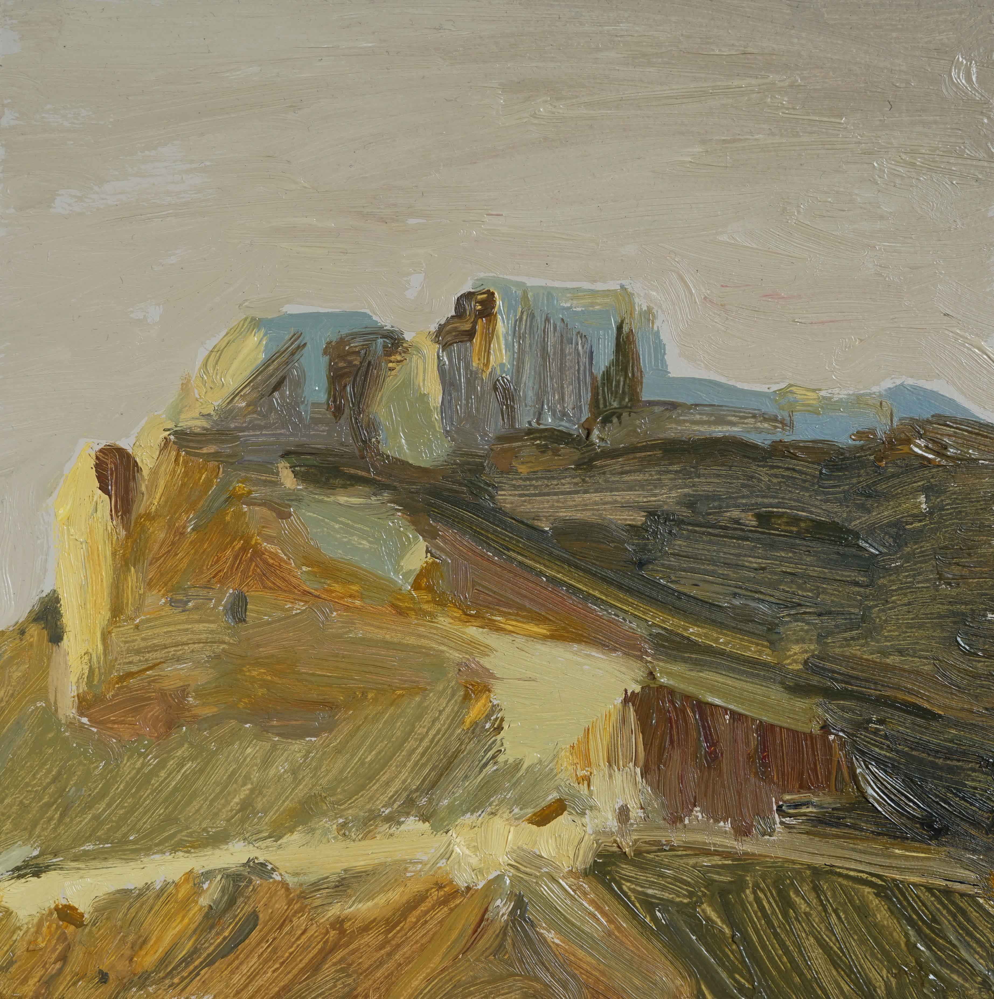
Wild camping with Anna / somewhere before the border Oil on board 2019
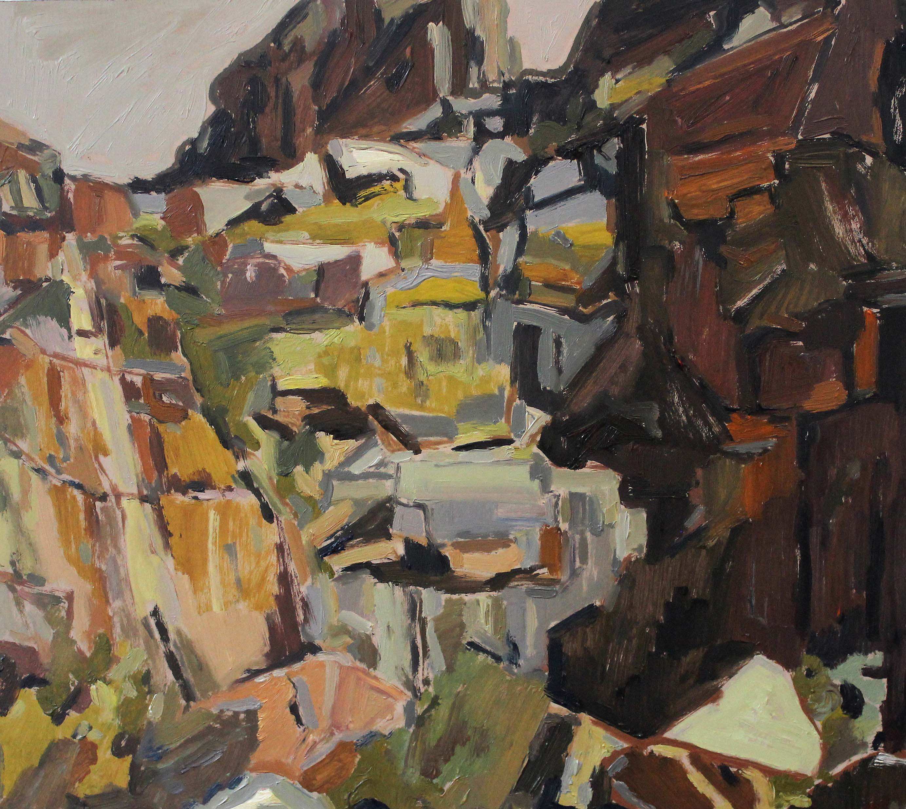
John sound recording in Wydekloof Oil on board 2018
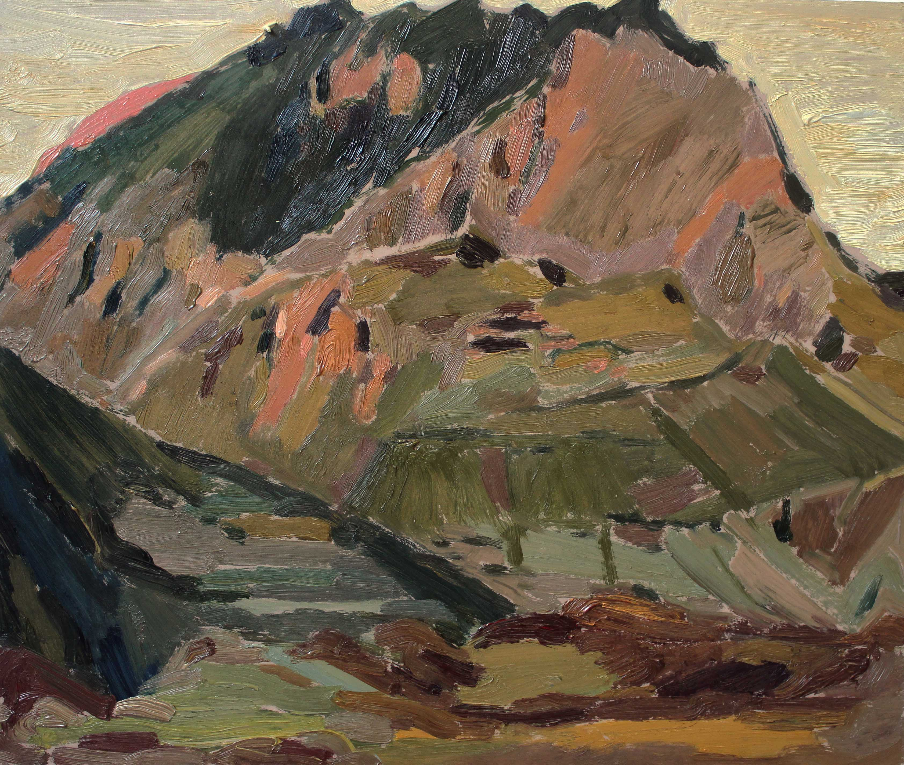
Brandberg / Namibia Oil on board 2018
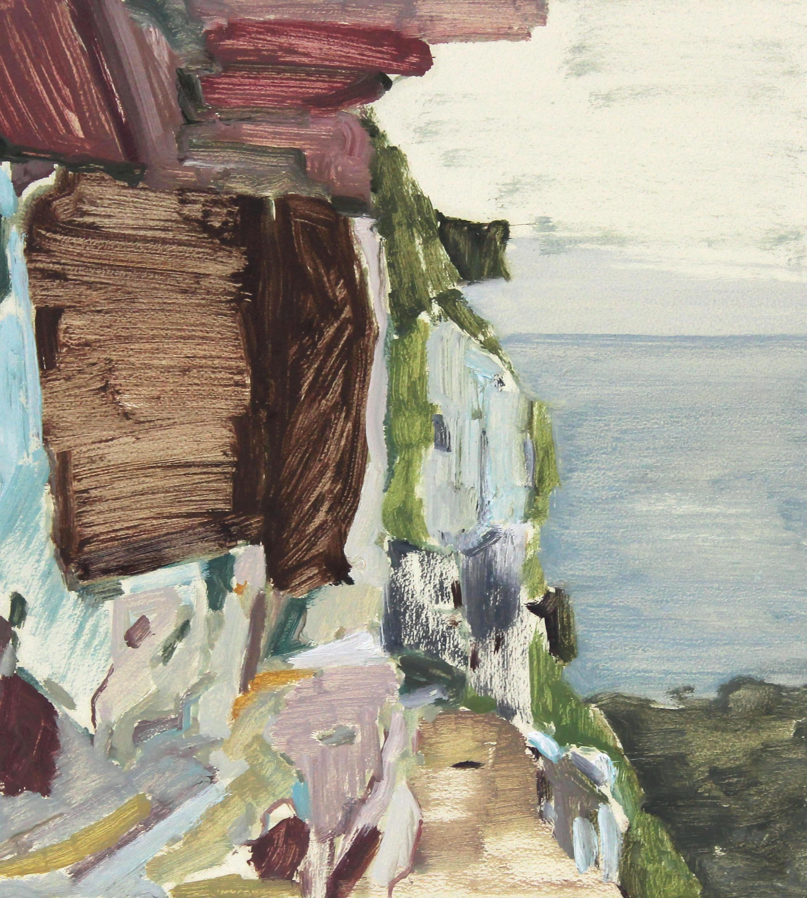
Kasteel's Buttress / Table Mountain Oil on board 2017
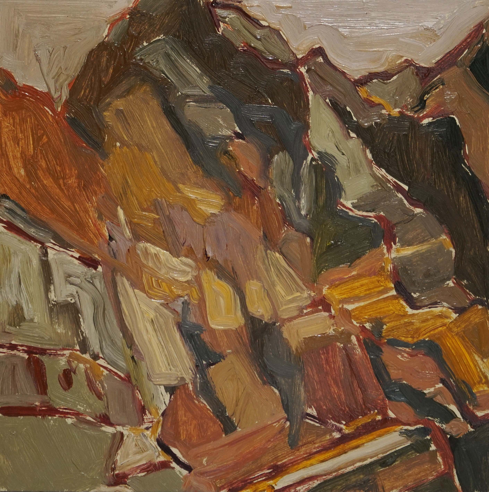
Thinking about knees / genuflection ridge Oil on board 2019
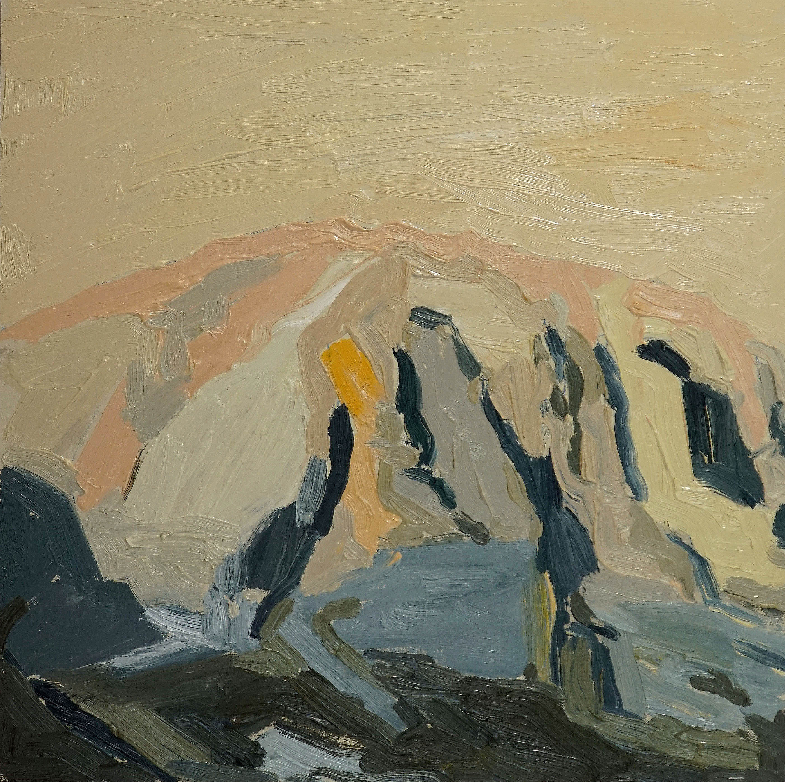
Emerging from Elandspad / Dutoitskloof Oil on board 2019
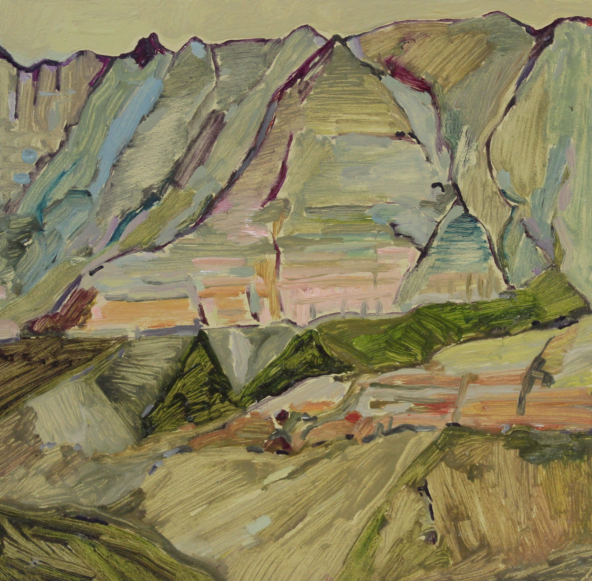
Du Toits Kloof Oil on board 2018Namibia Oil on board 2018Snow mission/ Dutoitskloof Oil on board 2018Diving rock / Cosy bay Oil on canvas 2018Early morning confetti bush / Table Mountain Oil on board 2019Winding our way to the turrets / Wydekloof Oil on board 2018Exposure nostalgia / Dutoitskloof Oil on board 2019Sebastian in Tulbagh Gouache on board 2015I'd rather be in Springstygbeugel, thanks. Oil on board 2019Thinking about knees II / Jonkershoek Oil on board 2019